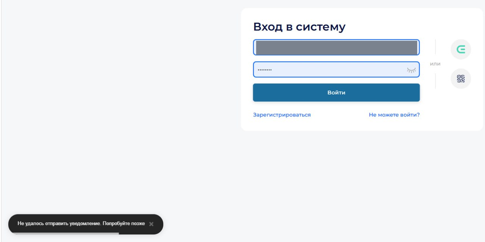
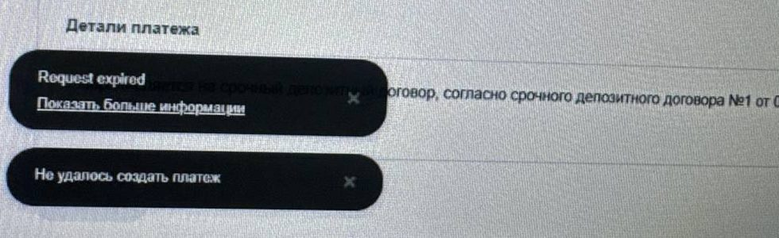
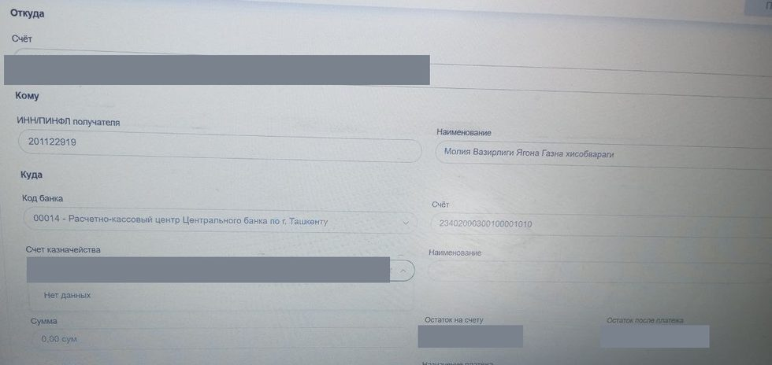
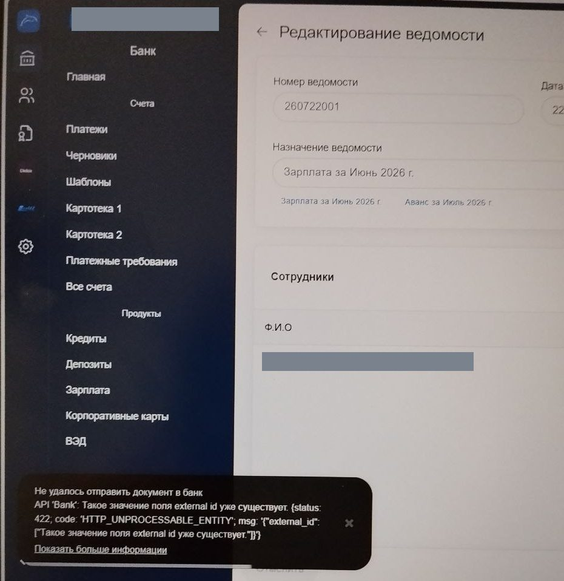
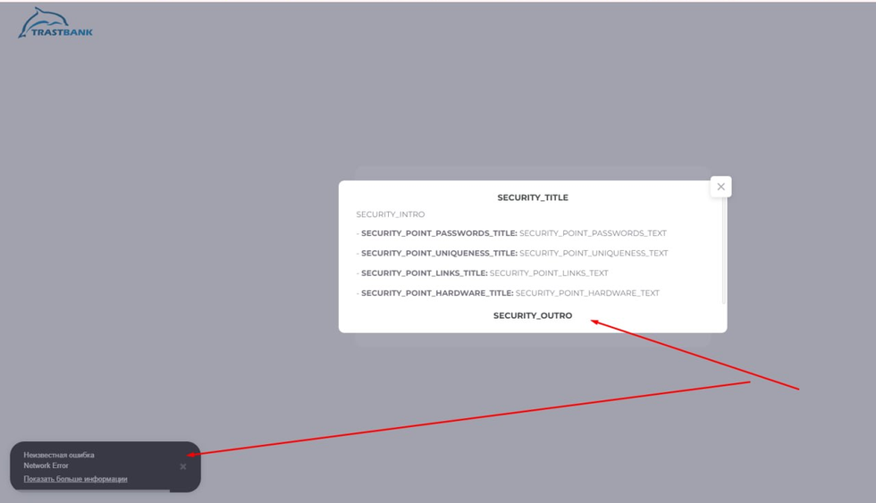
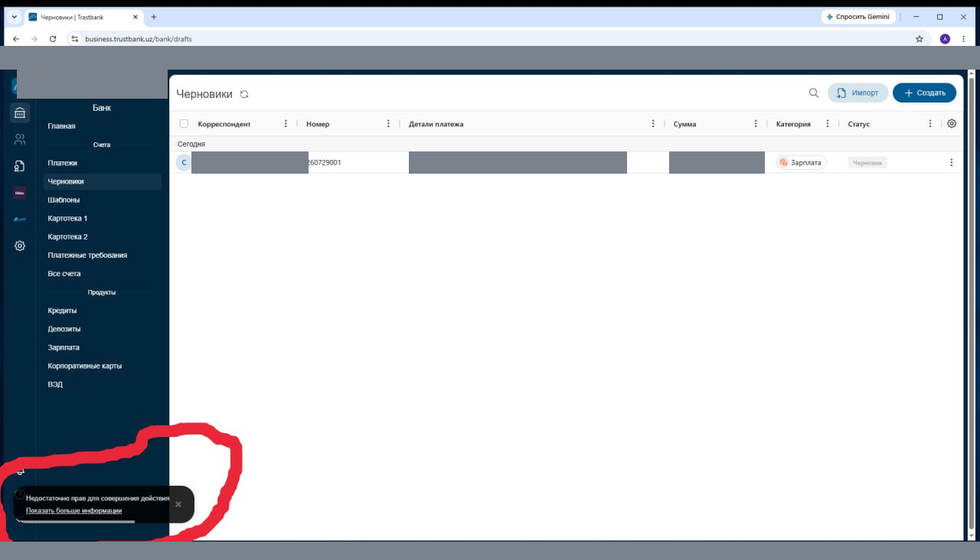

Возможные проблемы и их решение
Ошибки и сбои, с которыми чаще всего сталкиваются пользователи ДБО Trustbank Business: как выглядит проблема, почему она возникает и что нужно сделать.
Категории
Авторизация и вход
Проблемы на этапе входа в систему: неверные данные, SMS-код, блокировка учётной записи.
«Не удалось отправить уведомление. Попробуйте позже» Решается пользователем

Превышен лимит SMS-сообщений: на номер уже было отправлено несколько кодов подряд, и банк временно приостановил отправку новых сообщений.
- Подождите около 5 минут, не закрывая браузер.
- В это время не нажимайте «Войти» повторно — каждая новая попытка продлевает ожидание.
- Через 5 минут повторите вход в систему.
- Если SMS не приходит и после паузы — проверьте, привязан ли к пользователю номер телефона (см. раздел «ЭЦП и подписание»), и находится ли телефон в зоне действия сети.
ЭЦП и подписание документов
Ошибки при работе с электронной цифровой подписью и одноразовыми кодами подтверждения.
«Перед отправкой СМС с ОТР, необходимо привязать номер мобильного телефона» Решается администратором компании
У учётной записи пользователя не указан номер мобильного телефона, поэтому системе некуда отправить одноразовый код подтверждения.
- Войдите в систему под учётной записью директора или администратора компании.
- Откройте раздел «Настройки» → «Пользователи».
- Нажмите на нужного пользователя, чтобы открыть его карточку.
- Нажмите «Подключить» и укажите номер мобильного телефона пользователя.
- Подтвердите действие электронной цифровой подписью фирмы.
- После привязки пользователь может повторить действие — код придёт на указанный номер.
Платежи
Платёж не создаётся, не отправляется в банк, не заполняются реквизиты получателя.
«Request expired» — платёж не создаётся Настройка компьютера

Время на компьютере пользователя не совпадает с фактическим временем сервера банка. Система считает запрос устаревшим и отклоняет его ещё до отправки документа в банк.
- Откройте на компьютере «Пуск» → «Параметры» → «Время и язык» → «Дата и время».
- Включите переключатель «Устанавливать время автоматически».
- Включите «Устанавливать часовой пояс автоматически» либо выберите вручную UTC+05:00 (Ташкент).
- Нажмите «Синхронизировать сейчас».
- Обновите страницу ДБО (клавиша F5) и создайте платёж заново.
Не подтягиваются данные счёта казначейства — «Нет данных» Нужна поддержка банка

Справочник казначейских счетов не возвращает данные по введённому номеру: счёт отсутствует в справочнике системы либо справочник временно недоступен. Поле «Наименование» получателя при этом остаётся пустым, и платёж заполнить до конца невозможно.
- Сверьте номер лицевого счёта казначейства с документом-основанием — количество цифр должно совпадать полностью.
- Очистите поле крестиком и введите номер заново, без пробелов и лишних символов.
- Если после повторного ввода по-прежнему отображается «Нет данных» — обратитесь к администратору системы или в службу поддержки банка.
- Дождитесь ответа и заполните платёж заново.
«Такое значение поля external id уже существует» Решается пользователем

Документ с таким внутренним идентификатором уже зарегистрирован на стороне банка. Обычно это происходит при повторной отправке одного и того же документа или при редактировании и переотправке ранее отправленного — банк не принимает дубликат.
- Сначала откройте раздел «Платежи» и проверьте, не прошёл ли документ с первой попытки.
- Если документ уже принят банком — повторно отправлять его не нужно.
- Если документа нет — удалите текущий черновик или ведомость.
- Создайте документ заново, как новый платёж (новую ведомость), и отправьте его в банк.
Счета и выписки
Остаток не обновляется, выписка не формируется, документы попали в картотеку.
Технические проблемы
Страница не загружается, интерфейс отображается некорректно, проблемы с сетью и браузером.
«Неизвестная ошибка / Network Error» Проблема сети

Браузер не может достучаться до сервера банка — часть запросов не проходит. Характерный признак: вместо обычных надписей на экране отображаются служебные ключи вида SECURITY_TITLE, SECURITY_INTRO — это значит, что файл с текстами интерфейса тоже не загрузился. Чаще всего причина на стороне сети: провайдер, корпоративный файрвол или прокси, антивирус, VPN.
- Обновите страницу с очисткой кэша: Ctrl + F5.
- Раздайте интернет с мобильного телефона и войдите в систему через эту точку доступа.
- Если через мобильный интернет всё работает — проблема в сети офиса: обратитесь к системному администратору для проверки файрвола, прокси и антивируса.
- Отключите VPN, если он используется, и повторите вход.
- Если ошибка сохраняется и на мобильном интернете — обратитесь в службу поддержки банка.
Прочее
Права доступа, роли пользователей и прочие ситуации.
«Недостаточно прав для совершения действия» Решается директором компании

Роль текущего пользователя не включает право на выполняемое действие. Права выдаёт директор компании или пользователь с правами администратора.
- Войдите в систему под учётной записью директора компании.
- Откройте «Настройки» → «Пользователи».
- Нажмите на пользователя, которому нужно расширить доступ.
- Выдайте необходимые права (роль) и сохраните изменения.
- Пользователь должен выйти из системы и войти заново — только после этого новые права вступят в силу.